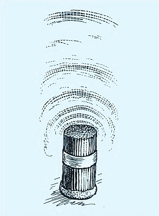

There have been many hypotheses about the physical nature of the CSE, but there is one theory that deserves greater attention. It was developed earlier by Valentin F. Zolotarev (1931-2000), Doctor of Physical and Mathematical Sciences, and it is now experimentally confirmed. (1, 3)
As a result of a long collaborative research Grebennikov and Zolotarev (1987) describe the discovery as "previously unknown phenomena of interaction between multi cavity structures and living systems, in which de Broglie waves associated with motion of electron flows in the solid walls of cavities create, by interference, a macroscopic field of multi cavity structures, which causes changes in the functional state of living objects located in this field". (1, 3)
In multi cavity structures, where the surface area is repeatedly curved, the super high frequency de Broglie waves are added together and they form, like musical overtones, harmonics with lower frequencies. Thus, by lengthening and strengthening due to the mutual overlap in the cells, they form anti-node maximums of standing de Broglie waves. Running against these passive obstacles, nerve impulses change their frequency and speed, causing not only the apparent sensations, but sometimes also significant physiological changes. (1, 3)
The CSE is caused by the interaction between de Broglie waves and biological systems. Cavities within the solid body are de Broglie wave resonators; they are a source of standing de Broglie waves (longitudinal waves). The rhythmical location of cavities leads to a reinforcement of the effect.(4)
According to B. N. Rodimov (1976, as cited by Frolov, 2001) the walls of multi cavity structures can be considered as the boundaries of the potential electron's box. The group movement of electrons leads to a system of standing de Broglie waves, which have classic frequencies.(4)
The classic frequencies are f = nh/4mL2, where n is an integer number, L is the circumference of cavity in centimeters, and m is the effective mass of the electron.(4) As an example, the classic frequency for 4.9 mm (side to side) diameter honey bee comb cell is calculated. The effective mass of an electron in beeswax is a bit hard to calculate, and therefore, in the calculation the free electron rest mass is used.
f = 1 · 6.626 · 10-34kgm2s-2 / 4 · 9.11 · 10-31kg · (1.7cm)2= 0.63 Hz
Further, Zolotarev gives a formula for the locations of de Broglie wave maximums: D = 2L(N+1)2K, where L is the circumference of the tube, N is the harmonic number of the wave, and K is the number of the anti-node/maximum.(4)

Fig. 2. Leaf-cutting bee nest CSE
For example, calculated wave maximums (1st harmonic anti-nodes) from the honey bee comb are at the distances of 7, 14, 27, 54, 109, 218 cm, and so on.
As a comparison, Grebennikov reported (1987) CSE maximums from the leaf-cutting bee nest entrances at the distances of 13, 26, 51, 102, and especially in 205 cm. At another leaf-cutting bee nest they were noted at the distances of 4 cm, 13 cm (especially strongly perceptible layer), 20, 40, 80, 120, and 150 cm. (1)
Grebennikov found out that bees and wasps can detect these wave beacons created by their nests. It is necessary for the ground bees to know not to engrave into adjacent nests while constructing their nest cavities, or otherwise the entire underground beecity could collapse. As for the leaf-cutting bees, they need to know where to find finished cavities with necessary parameters. Moreover, one experiment with the hunter wasps showed that they were able to find their moved nest because of a wave beacon created by the nest cavern.(1, 2)
Fig. 3. Flower CSE
Grebennikov discovered that the flowers of plants also create CSE. By moving a drawing coal over large, bell-shaped flowers (tulips, lilies, amaryllises, mallows, pumpkins), already at a distance, he could feel a "braking" of this detector. And there was another mystery of nature revealed to him by insects. To attract their pollinators, flowers use not only color, odor, and nectar, but also a similar wave beacon, powerful and unstoppable. Additionally he found out that the males of many species of beetles (especially Rhinoceros beetles) have horn cavities that are CSE indicators of specific parameters, which help them to find partners to each other.(1, 2)